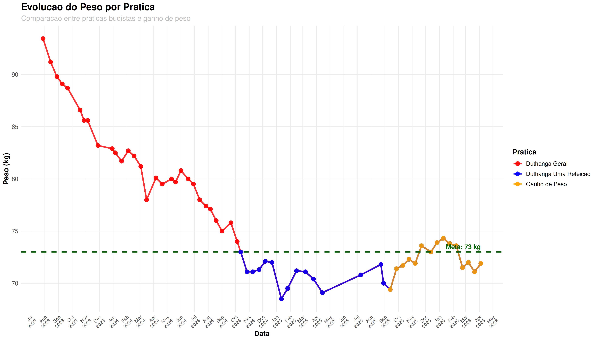

Acompanhamento das práticas ascéticas budistas e seus efeitos na composição corporal
Definição: Conjunto completo de práticas ascéticas budistas que incluem não comer depois do meio dia, não matar, não roubar, não ter conduta sexual, não mentir sobre as realizações de prática, não usar entorpecentes, não ter luxo, não se entreter e não usar ornamentos e perfumes.
Objetivo: Desenvolvimento do corpo-mente através da disciplina moral.
Período: Prática contínua com registros desde o início do acompanhamento.
Definição: Prática específica de consumir apenas uma refeição por dia, tradicionalmente antes do meio-dia.
Objetivo: Disciplina mental e física através da restrição alimentar consciente.
Evolução do peso corporal durante diferentes práticas Duthanga
